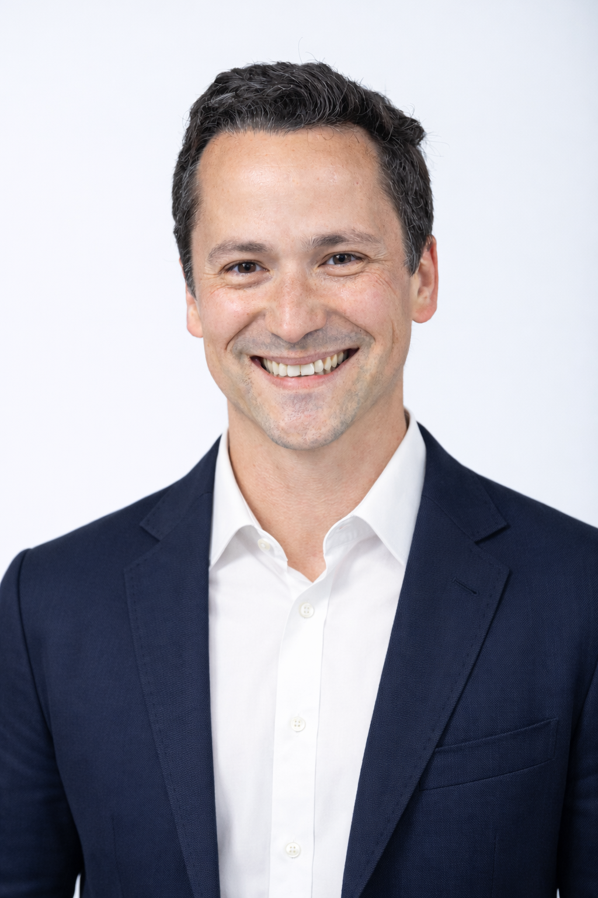

BBC Click
"Controlling a smartwatch with your eyes" — Coverage of the Orbits project, demonstrating gaze interaction on smart watches using smooth pursuit eye movements.
Professor of Computer Science · Deputy Head of School · University of Sydney
I am a Professor of Computer Science at the University of Sydney, where I also serve as Deputy Head of School and Associate Head of School (Research). My research focuses on interaction design for emerging technologies. I study and build new forms of human-computer interaction at the frontier of what is technically possible.
I am interested in the novel user experiences enabled by novel input and sensing modalities, the design of new interaction devices and techniques, and the use of AI and machine learning in interactive systems. My work involves a deliberate mix of methods, including qualitative observations of user behaviour, co-design with stakeholders, working prototypes of novel interactions, and quantitative evaluations of novel interactive systems.
My research generally spans five themes: interaction in mixed and extended reality; human-centred AI & intelligent user interfaces; HCI theory and methodology; gaze, multimodal interaction & input techniques; and embodied learning and movement. These themes share a common belief — that as technologies change, our models of interaction must change with them.
I hold a PhD in Computer Science from Lancaster University and a BEng in Computer Engineering from PUC-Rio.

University of Sydney
Professor of Computer Science · Deputy Head of School · Associate Head of School (Research)
2024 – present · School of Computer Science · Sydney, Australia
University of Melbourne
Associate Professor / Senior Lecturer / Lecturer in HCI
2017 – 2023 · School of Computing and Information Systems · Melbourne, Australia
Microsoft Research Centre for Social Natural User Interfaces
Research Fellow · The University of Melbourne
2016 · Melbourne, Australia · Previously: Visiting Research Student, Microsoft Research Cambridge (2012)
Lancaster University
PhD Computer Science
2011 – 2015 · Thesis: From Head to Toe: Expanding the Design Space of Body Movement in HCI · Supervisors: Hans Gellersen, Andreas Bulling, Jason Alexander · Lancaster, United Kingdom
PUC-Rio
BEng Computer Engineering (Hons.) · Minor in Entrepreneurship
2006 – 2010 · WAM 88% · Academic Excellence Award (top 5%) · Oscar Niemeyer Award for Scientific and Technological Work · Rio de Janeiro, Brazil
BBC Click
"Controlling a smartwatch with your eyes" — Coverage of the Orbits project, demonstrating gaze interaction on smart watches using smooth pursuit eye movements.
Wired
"Your next smartwatch might be controlled with your eyes" — Feature on the Orbits project and the future of gaze-based interaction on wearable devices.
New Scientist
"Pump iron the smart way with a motion-capture coach" — Coverage of research using body-worn sensors to automatically recognise and correct weight-lifting exercises.
Digital Trends & Motherboard
"Thermal imaging can reveal just how hard your brain is working" — Feature on using thermal cameras to unobtrusively estimate cognitive load during interaction.